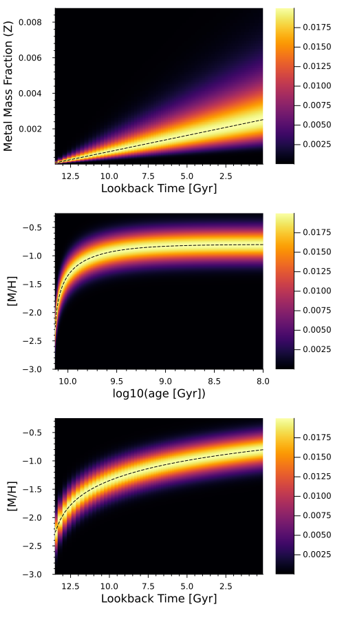

Logarithmic Age-Metallicity Relation
Definition
This model differs from the linear age-metallicity relation (AMR) in its definition of the mean metallicity at lookback time $t$. In the linear model, we defined the mean metallicity as $\langle [\text{M}/\text{H}] \rangle (t) = \alpha \, \left( T_\text{max} - t_j \right) + \beta$, whereas in this model we define the metal mass fraction $Z$ to be linear with lookback time, such that [M/H] scales logarithmically with lookback time,
\[\begin{aligned} \langle Z \rangle (t) &= \alpha \, \left( T_\text{max} - t \right) + \beta \\ \langle [\text{M}/\text{H}]\rangle (t) &\equiv \text{log} \left( \frac{\langle Z \rangle \left(t\right)}{X} \right) - \text{log} \left( \frac{Z_\odot}{X_\odot} \right) \end{aligned}\]
with $T_\text{max}$ being the earliest lookback time under consideration, such that $\langle Z \rangle (T_\text{max}) = \beta$. We choose this parameterization so that positive $\alpha$ and $\beta$ result in an age-metallicity relation that is monotonically increasing with decreasing lookback time $t$. If we model the spread in metallicities at fixed $t$ as Gaussian in [M/H] with the GaussianDispersion dispersion model, this implies the spread is asymmetric in $Z$; this can be seen in the output of examples/log_amr/log_amr_example.jl, shown below, which illustrates the relative weights due to a logarithmic AMR across a grid of ages and metallicities.
This logarithmic AMR is implemented with the LogarithmicAMR type, which is a subtype of AbstractAMR.
StarFormationHistories.LogarithmicAMR — Type
LogarithmicAMR(α::Real,
β::Real,
T_max::Real = 137//10,
MH_func = MH_from_Z,
dMH_dZ = dMH_dZ,
free::NTuple{2, Bool} = (true, true))Subtype of AbstractAMR implementing the logarithmic age-metallicity relation where the mean metal mass fraction Z at a lookback time $t_j$ (in Gyr) is Z = α * (T_max - t_j) + β. α is therefore a slope describing the rate of change in the metal mass fraction per Gyr, and β is the mean metal mass fraction of stars being born at a lookback time of T_max, which has units of Gyr. MH_func must be a callable (e.g., a function) that takes a single argument Z and converts it to [M/H]; the default function is appropriate for PARSEC stellar models. dMH_dZ must be a callable that takes a single argument Z and returns the derivative of MH_func with respect to Z. free controls whether α and β should be freely fit or fixed when passed into fit_sfh; if free[1] == true then α will be freely fit, whereas it will fixed if free[1] == false. free[2] has the same effect but for β.
LogarithmicAMR(constraint1, constraint2, T_max::Real=137//10,
MH_func = MH_from_Z, dMH_dZ = dMH_dZ, Z_func = Z_from_MH,
free::NTuple{2, Bool}=(true, true))Construct an instance of LogarithmicAMR from MH constraints at two different lookback times. Each of constraint1 and constraint2 should be length-2 indexables (e.g., tuples) whose first element is a metallicity [M/H] and second element is a lookback time in Gyr. The order of the constraints does not matter.
Examples
julia> LogarithmicAMR((-2.5, 13.7), (-1.0, 0.0), 13.7) isa LogarithmicAMR{Float64}
true
julia> LogarithmicAMR((-2.5, 13.7), (-1.0, 0.0), 13.7) ==
LogarithmicAMR((-1.0, 0.0), (-2.5, 13.7), 13.7)
trueThe per-model coefficients (the $r_{j,k}$ above) implied by a such a logarithmic AMR can be calculated with calculate_coeffs and an example is shown below.

Fitting Functions
fit_sfh and sample_sfh both work with this AMR model.
The method StarFormationHistories.construct_x0_mdf can be used to construct the stellar mass components $R_j$ of the initial guess vector x0.
Implementation
As the only part of the model that differs from the linear AMR case is the mean age-metallicity relation, most of the derivation for the linear AMR case is still valid here. In particular, only the partial derivatives of the relative weights $A_{j,k} \equiv \text{exp} \left( -\frac{1}{2 \, \sigma^2} \, \left( [\text{M}/\text{H}]_k - \mu_j \right)^2\right)$ with respect to the fitting parameters $\alpha$ and $\beta$ need to be recalculated under the new model. The partial derivative with respect to $\sigma$ is the same, as the mean metallicity in time bin $j$, denoted $\mu_j$, does not depend on $\sigma$.
\[\begin{aligned} Z_j &\equiv \langle Z \left(t_j\right) \rangle = \alpha \, \left( T_\text{max} - t_j \right) + \beta \\ \\ \mu_j &\equiv \langle [\text{M}/\text{H}] \rangle \left(t_j\right) = \text{log} \left( \frac{\langle Z\left(t_j\right) \rangle}{X_j} \right) - \text{log} \left( \frac{Z_\odot}{X_\odot} \right) \\ &= \text{log} \left[ \frac{ \alpha \, \left( T_\text{max} - t_j \right) + \beta}{X_j} \right] - \text{log} \left( \frac{Z_\odot}{X_\odot} \right) \end{aligned}\]
We can use the chain rule to write
\[\begin{aligned} A_{j,k} &\equiv \text{exp} \left( - \frac{1}{2} \left( \frac{ [\text{M}/\text{H}]_k - \mu_j}{\sigma} \right)^2 \right) \\ \frac{\partial \, A_{j,k}}{\partial \, \beta} &= \frac{\partial \, A_{j,k}}{\partial \, \mu_j} \, \frac{\partial \mu_j}{\partial \beta} \\ \frac{\partial \, A_{j,k}}{\partial \, \alpha} &= \frac{\partial \, A_{j,k}}{\partial \, \mu_j} \, \frac{\partial \mu_j}{\partial \alpha} \\ \end{aligned} \\\]
By definition the hydrogen, helium, and metal mass fractions, $X$, $Y$, and $Z$ respectively, must sum to 1. For PARSEC models, $Y$ is a function of $Z$ (see Y_from_Z) such that $X_j$ is a function of $Z_j$ and therefore also $\alpha$ and $\beta$. Under the PARSEC model, $Y = Y_p + \gamma \, Z$, we have $X(Z) = 1 - \left( Y_p + \gamma \, Z \right) - Z$ such that we can rewrite the $\mu_j$ as
\[\mu_j = \text{log} \left( \frac{Z_j}{1 - \left( Y_p + \gamma \, Z_j \right) - Z_j} \right) - \text{log} \left( \frac{Z_\odot}{X_\odot} \right)\]
and we can further expand the partial derivatives of $\mu_j$ as
\[\begin{aligned} \frac{\partial \mu_j}{\partial \beta} &= \frac{\partial \mu_j}{\partial Z_j} \, \frac{\partial Z_j}{\partial \beta} \\ \frac{\partial \mu_j}{\partial \alpha} &= \frac{\partial \mu_j}{\partial Z_j} \, \frac{\partial Z_j}{\partial \alpha} \\ \end{aligned} \\\]
such that the model-dependent portion $\left( \frac{\partial Z_j}{\partial \beta} \right)$ can be separated from what is essentially a calibration defining how [M/H] is calculated from $Z$ $\left( \frac{\partial \mu_j}{\partial Z_j} \right)$. Given our model $Z_j = \alpha \, \left( T_\text{max} - t_j \right) + \beta$ and the PARSEC calibration for conversion between $Z_j$ and $\mu_j$ (i.e., [M/H]), we have
\[\begin{aligned} \frac{\partial \mu_j}{\partial Z_j} &= \frac{Y_p - 1}{\text{ln}10 \, Z_j \, \left( Y_p + Z_j + \gamma \, Z_j - 1 \right)} \\ \frac{\partial Z_j}{\partial \beta} &= \frac{\partial \left[\alpha \, \left( T_\text{max} - t_j \right) + \beta \right]}{\partial \beta} = 1 \\ \frac{\partial Z_j}{\partial \alpha} &= \frac{\partial \left[ \alpha \, \left( T_\text{max} - t_j \right) + \beta \right]}{\partial \alpha} = T_\text{max} - t_j \\ \end{aligned}\]
[M/H] as a function of $Z$ for the PARSEC calibration is available as MH_from_Z and the partial derivative $\frac{\partial \mu_j}{\partial Z_j}$ is available as dMH_dZ.
Which gives us final results
\[\begin{aligned} \frac{\partial \, A_{j,k}}{\partial \, \mu_j} &= \frac{A_{j,k} \, \left( [\text{M}/\text{H}]_k - \mu_j \right)}{\sigma^2} \\ \frac{\partial \mu_j}{\partial \beta} &= \frac{\partial \mu_j}{\partial Z_j} \, \frac{\partial Z_j}{\partial \beta} = \left( \frac{Y_p - 1}{\text{ln}(10) \, Z_j \, \left( Y_p + Z_j + \gamma \, Z_j - 1 \right)} \right) \ \left( 1 \right) \\ \frac{\partial \mu_j}{\partial \alpha} &= \frac{\partial \mu_j}{\partial Z_j} \, \frac{\partial Z_j}{\partial \alpha} = \left( \frac{Y_p - 1}{\text{ln}(10) \, Z_j \, \left( Y_p + Z_j + \gamma \, Z_j - 1 \right)} \right) \ \left( T_\text{max} - t_j \right) \\ %% \frac{\partial \mu_j}{\partial \beta} &= \frac{1}{\left( t_j \, \alpha + \beta \right) \, \text{ln}(10)} \\ %% \frac{\partial \mu_j}{\partial \alpha} &= \frac{t}{\left( t_j \, \alpha + \beta \right) \, \text{ln}(10)} = t \, \frac{\partial \mu_j}{\partial \beta} \\ \end{aligned}\]
such that
\[\begin{aligned} \frac{\partial \, A_{j,k}}{\partial \, \beta} &= \frac{\partial \, A_{j,k}}{\partial \, \mu_j} \, \frac{\partial \mu_j}{\partial \beta} = \frac{\partial \, A_{j,k}}{\partial \, \mu_j} \, \frac{\partial \mu_j}{\partial Z_j} \, \frac{\partial Z_j}{\partial \beta} \\ &= \left( \frac{A_{j,k} \, \left( [\text{M}/\text{H}]_k - \mu_j \right)}{\sigma^2} \right) \ \left( \frac{Y_p - 1}{\text{ln}10 \, Z_j \, \left( Y_p + Z_j + \gamma \, Z_j - 1 \right)} \right) \\ \frac{\partial \, A_{j,k}}{\partial \, \alpha} &= \frac{\partial \, A_{j,k}}{\partial \, \mu_j} \, \frac{\partial \mu_j}{\partial \alpha} = \frac{\partial \, A_{j,k}}{\partial \, \mu_j} \, \frac{\partial \mu_j}{\partial Z_j} \, \frac{\partial Z_j}{\partial \alpha} \\ &= \left( \frac{A_{j,k} \, \left( [\text{M}/\text{H}]_k - \mu_j \right)}{\sigma^2} \right) \ \left( \frac{Y_p - 1}{\text{ln}10 \, Z_j \, \left( Y_p + Z_j + \gamma \, Z_j - 1 \right)} \right) \ \left( T_\text{max} - t_j \right) \\ &= \left( T_\text{max} - t_j \right)\ \frac{\partial \, A_{j,k}}{\partial \, \beta} \\ %% \frac{\partial \, A_{j,k}}{\partial \, \beta} &= \frac{\partial \, A_{j,k}}{\partial \, \mu_j} \, \frac{\partial \mu_j}{\partial \beta} = \left( \frac{A_{j,k} \, \left( [\text{M}/\text{H}]_k - \mu_j \right)}{\sigma^2} \right) \, \left( \frac{1}{\left( t_j \, \alpha + \beta \right) \, \text{ln}(10)} \right) \\ %% &= \frac{A_{j,k} \, \left( [\text{M}/\text{H}]_k - \mu_j \right)}{\text{ln}(10) \, \sigma^2 \, \left( t_j \, \alpha + \beta \right)} \\ %% \frac{\partial \, A_{j,k}}{\partial \, \alpha} &= \frac{\partial \, A_{j,k}}{\partial \, \mu_j} \, \frac{\partial \mu_j}{\partial \alpha} = t \, \frac{\partial \, A_{j,k}}{\partial \, \beta} \end{aligned}\]